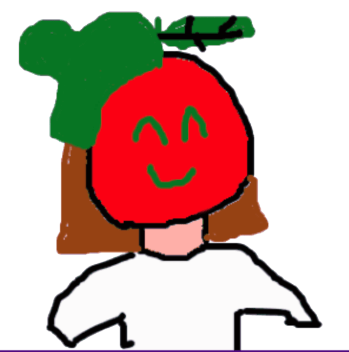
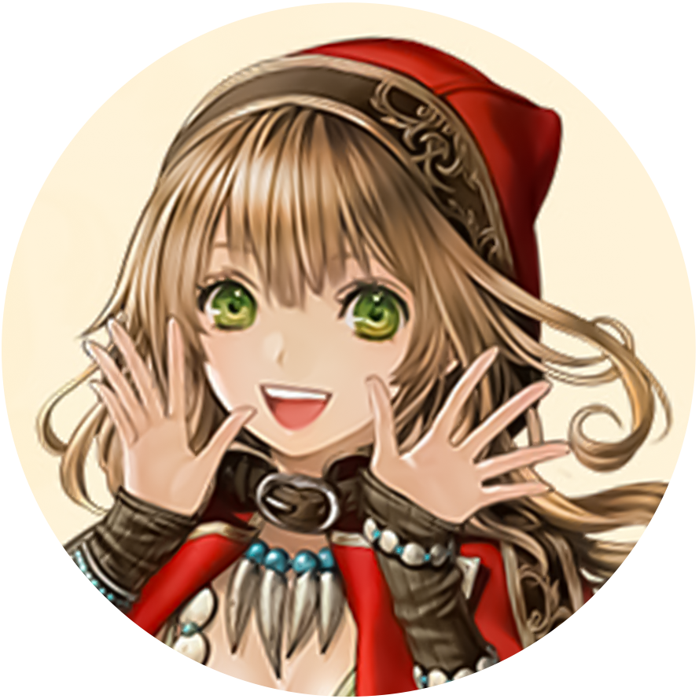
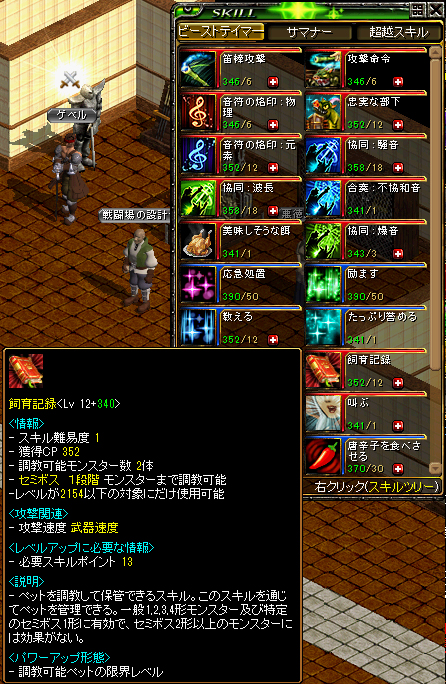
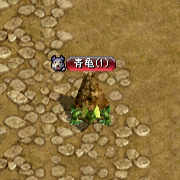
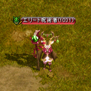
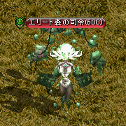

【テイマ育成・質疑応答】
1. ペット2. スキル
3. 装備
4. 覚醒
5. クリーチャー
6. 超越
7. 属性
8. 図案書
9. クレスト
10. セットオプション
11. 攻撃速度
12. スキル配置・おすすめスキル
13. 支援・旗バフ

すみません、テイマのプロって聞きました！
わたしもいつかテイマ育成したいと思ってるのでいろいろ質問させてください
わたしもいつかテイマ育成したいと思ってるのでいろいろ質問させてください

(〃ﾉдﾉ)
1. ペット
えーとじゃ、まず大事なペットを捕まえにいきたいなと思います！
あっでも捕まえるのにどの【スキル】を使うんですか？あと序盤におすすめのPと最終のPを教えていただきたいです！
あっでも捕まえるのにどの【スキル】を使うんですか？あと序盤におすすめのPと最終のPを教えていただきたいです！
【飼育記録】でテイムできるのだ

最初のペットはカメかクラゲ！


最終は色々いるけれど特におすすめはエリート呪術者！


詳しくはこちらの記事をみてね！

【覚醒ペット】は覚醒しないとテイムできませんか？
覚醒関係なくテイムできます！
【転生ペット】ってなんですか？
転生後にクエストクリアでテイムできる限定ペット！
と思いきや・・・5次転生のバルカイン（イーグルヘッド）以外は他の場所でもテイムできます
と思いきや・・・5次転生のバルカイン（イーグルヘッド）以外は他の場所でもテイムできます
2. スキル
【教える】ってスキルは使ったほうがいいですか？
使ったほうがいい！
属性弱化120%・魔法弱化120%とは 別枠 だからすごく強いです
属性弱化120%・魔法弱化120%とは 別枠 だからすごく強いです
スキル振りやパッシブを教えてもらってもいいでしょうか・・？
スキル振りは
⇒「気まぐれの日」Lv50
⇒「風雨の日」Lv30「教える」Lv30「誉める」Lv30「唐辛子を食べさせる」Lv30
⇒真心の民（気まぐれの日覚醒）に覚醒
⇒風雨、教える、誉める、辛子それぞれバランスよく上げてLv50に
⇒覚醒スキル「合奏：爆音」をとる
って流れが良い感じ！
⇒「気まぐれの日」Lv50
⇒「風雨の日」Lv30「教える」Lv30「誉める」Lv30「唐辛子を食べさせる」Lv30
⇒真心の民（気まぐれの日覚醒）に覚醒
⇒風雨、教える、誉める、辛子それぞれバランスよく上げてLv50に
⇒覚醒スキル「合奏：爆音」をとる
って流れが良い感じ！
ありがとうございます！！
めちゃわかりやすい！！
次に装備を知りたいです。
強い方と難易度低めをお願いします。
めちゃわかりやすい！！
次に装備を知りたいです。
強い方と難易度低めをお願いします。
3. 装備
強い方⇒1000UMU笛の「平和の行進曲」
めちゃくちゃ強いから育成中の人はこの笛装備するのを目標にしてね
難易度低め⇒始めてすぐの人は「協会装備」で！
いったん「全身協会装備」にするだけでもつよつよ！
足は厳めしいブーツがおすすめ！
詳しくはこちらの記事をみてね！

めちゃくちゃ強いから育成中の人はこの笛装備するのを目標にしてね
難易度低め⇒始めてすぐの人は「協会装備」で！
いったん「全身協会装備」にするだけでもつよつよ！
足は厳めしいブーツがおすすめ！
詳しくはこちらの記事をみてね！
笛につけるＯＰはなにがいいです？
【魔力】がおすすめ！
もちろんペットにも乗ります。
他には【知識比率】もいい感じ
もちろんペットにも乗ります。
他には【知識比率】もいい感じ
【製錬】の【ペット魔法攻撃力】ってなに？つよいです？
強い！
【魔法強化】とは【別枠】でペットに乗ります。
でも【魔法強化400％】積んでから気にすれば大丈夫、
最初は気にせず！
【魔法強化】とは【別枠】でペットに乗ります。
でも【魔法強化400％】積んでから気にすれば大丈夫、
最初は気にせず！
4. 覚醒
ありがとうございます！！
教会装備でも全然余裕ですね！
まぁ強い方は忘れる事にしますね。
装備を揃え終わったらレベルを上げていきたいです。
あっ！覚醒どうしましょう？
教会装備でも全然余裕ですね！
まぁ強い方は忘れる事にしますね。
装備を揃え終わったらレベルを上げていきたいです。
あっ！覚醒どうしましょう？
覚醒は何するにしてもペット3体にできる 真心の民（気まぐれの日覚醒）!!
5. クリーチャー
ペット3体の覚醒があるなんて知らなかったです！！！
レベルもそこそこになってきてコクーンが溜まってきました。
クリーチャーどうしたらいいですか？
レベルもそこそこになってきてコクーンが溜まってきました。
クリーチャーどうしたらいいですか？
クリーチャーはなんでも大丈夫！！！
適当にあけてよさげなのをまずはつけましょう
ガチ向けは
⇒ ペット最終ダメ50、経験値50、ドロップ率50、上級経験値50
人によっては魔法強打積んだりも。
適当につけるなら上記以外だと
⇒ ペットステータス、ペット強化、属性弱化、属性強化もいい感じ！
適当にあけてよさげなのをまずはつけましょう
ガチ向けは
⇒ ペット最終ダメ50、経験値50、ドロップ率50、上級経験値50
人によっては魔法強打積んだりも。
適当につけるなら上記以外だと
⇒ ペットステータス、ペット強化、属性弱化、属性強化もいい感じ！
6. 超越
次に【超越】ですね？大切な超越とまぁ余裕があるならの超越が知りたいです
大切⇒ 魔力吸収、領域展開
余裕あるなら⇒ 知識集中鍛錬、魔力暴走、辛子改
余裕あるなら⇒ 知識集中鍛錬、魔力暴走、辛子改
7. 属性
あっ！【属性上限】知りたいです。
テイマーはペットによりけりですか？
テイマーはペットによりけりですか？
使うペットの属性に合わせて属性弱化・属性強化は変わってくるね
共通して必要になるのは
① スキルレベル
② 魔法弱化・強化
③ 力・知識比率！
装備ベースは弱化を優先で、OPはスキル重視で、スキルがつかないところに比率つける感じがおすすめ
スキルはlv200辺りで上限 になるものが多いから、＋150 積むのをいったん目標に|дﾟ
共通して必要になるのは
① スキルレベル
② 魔法弱化・強化
③ 力・知識比率！
装備ベースは弱化を優先で、OPはスキル重視で、スキルがつかないところに比率つける感じがおすすめ
スキルはlv200辺りで上限 になるものが多いから、＋150 積むのをいったん目標に|дﾟ
8. 図案書
え・・めちゃ大変そう。
でもパズルみたいで楽しそう！
【図案書】はどうしたらいいですか？
でもパズルみたいで楽しそう！
【図案書】はどうしたらいいですか？
図案書は「ファミリアの報恩」を1段階5セット がおすすめ！
図案書は「反転」 を使う人もいるけど、ファミで十分。
上級者になったら反転つけましょう
図案書は「反転」 を使う人もいるけど、ファミで十分。
上級者になったら反転つけましょう
9. クレスト
【クレスト】もお願いします！
装備構成次第だけど、
属性強化や魔法弱化のクレストをつけるのがおすすめ！
属性弱化は刺青や冠等で十分足りるのだ
属性強化や魔法弱化のクレストをつけるのがおすすめ！
属性弱化は刺青や冠等で十分足りるのだ
10. セットオプション
【セットオプション】は何つけたらいいの？
lv低いときは【恩寵の】がおすすめ！
あとは【極意の】もいいかも
高lvになってきたらあえてセットオプションつけないこともあるよ
あとは【極意の】もいいかも
高lvになってきたらあえてセットオプションつけないこともあるよ
変な【セットオプション】が出たんだけど・・・
【交感の】⇒対人物理テイマが特定のビルドで使うことがあります！
たまに高額で買い叫びしてる人いるけど狩りでは基本使わないです
【庇護の】⇒コレも主に対人用。強いけど使いどころはそんなに無い・・・
【指揮の】⇒これは本当に使い道がなくて・・・名前はかっこいいのにね
【庇護の】⇒コレも主に対人用。強いけど使いどころはそんなに無い・・・
【指揮の】⇒これは本当に使い道がなくて・・・名前はかっこいいのにね
【信義の】ってあったほうがいいの？
テイム成功率が上がるセットオプションですね
あるとテイムが楽になります。でも6部位揃えなくても2部位とか4部位でも全然変わる！
テイムが楽しくなるから試してみてね
あるとテイムが楽になります。でも6部位揃えなくても2部位とか4部位でも全然変わる！
テイムが楽しくなるから試してみてね
11. 攻撃速度
ありがとうござざいます！！ちなみに【攻撃速度】は何フレですか？
おすすめしたペットだと、カメ、クラゲ、エリート呪術者は３フレ
（攻撃速度276%）を目指しましょう。
※フレについては諸説あります
森の司令は特技が5フレだから攻撃速度があまり積めない人でも使いやすいかも！
（攻撃速度276%）を目指しましょう。
※フレについては諸説あります
森の司令は特技が5フレだから攻撃速度があまり積めない人でも使いやすいかも！
【攻撃速度】って【ペット用】のやつじゃないとだめなの？
ダメです。
通常の攻撃速度は本体にしか乗らない！
ペット用の攻撃速度が必要になるんだけど...最初は積むの大変だから旗バフの攻撃速度で我慢
通常の攻撃速度は本体にしか乗らない！
ペット用の攻撃速度が必要になるんだけど...最初は積むの大変だから旗バフの攻撃速度で我慢
12. スキル配置・おすすめスキル
スキルの配置や、おすすめのスキルはありますか？
爆音型なら左クリックは左上に【音符の烙印：元素】、
左下に【合奏：爆音】、右クリックも【合奏：爆音】がおすすめ
特技型はもう上級者だから自分のやりやすい配置を見つけてみてね(; ･`д･´)
狩場で辛子が切れてペットが死にかけるってことが最初はよくあるかも、
【唐辛子を食べさせる】と【応急処置】はすぐ使える配置がおすすめ！
左下に【合奏：爆音】、右クリックも【合奏：爆音】がおすすめ
特技型はもう上級者だから自分のやりやすい配置を見つけてみてね(; ･`д･´)
狩場で辛子が切れてペットが死にかけるってことが最初はよくあるかも、
【唐辛子を食べさせる】と【応急処置】はすぐ使える配置がおすすめ！
13. 支援・旗バフ
旗バフってペットにも乗るの？
乗る！！
特に弱化が本体とペットで二重にかかるから大事！
ペットは召喚してる状態で旗バフ受け取ってね
特に弱化が本体とペットで二重にかかるから大事！
ペットは召喚してる状態で旗バフ受け取ってね
マップ移動したらなんか火力落ちたんやが？
以下のスキルはマップ移動で効果が切れるからかけ直してね
・【教える】
・【誉める】
※切れるっていうか効果が弱まる
・【教える】
・【誉める】
※切れるっていうか効果が弱まる
かけ直したけどまだ火力落ちてるんやが？！！？
恩寵がキレてるかも
改変でペットにも恩寵ダメージが乗るようになってます
でもマップ移動したときにペットだけ恩寵切れることがあるから、恩寵の魔石を持ち歩こうね
改変でペットにも恩寵ダメージが乗るようになってます
でもマップ移動したときにペットだけ恩寵切れることがあるから、恩寵の魔石を持ち歩こうね
いちいちペットに支援かけるのだるい
貴様・・・（#^ω^）
たしかに辛子、励ます、誉める、教えるって感じで使うスキル多いもんね
そんなあなたにオススメなのが
＼サマナー／
サマナーはテイマみたいにかけ直し必要なスキルが（あんまり）無いからやりやすいかも！
覚醒も3種類どれも強いから楽しめるプレイスタイルを探してみてね
たしかに辛子、励ます、誉める、教えるって感じで使うスキル多いもんね
そんなあなたにオススメなのが
＼サマナー／
サマナーはテイマみたいにかけ直し必要なスキルが（あんまり）無いからやりやすいかも！
覚醒も3種類どれも強いから楽しめるプレイスタイルを探してみてね